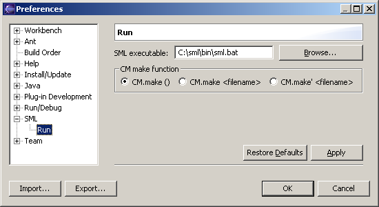

Before Eclipse can run any SML program, there are a few things you need to set up. This only needs to be done once.
You also have to specify where SML is installed on your system.

Now Eclipse is ready to run your SML programs.
SML will start running in the Console window at the bottom of the workbench. Your file will automatically be loaded into SML, and then you will get the SML prompt where you can start using the program. To close it, right-click on the console and select Terminate.
Eclipse saves the information you entered in the Run dialog box as a launch configuration. The next time you want to run the program, its location will already be saved. To run a different program, you can create another launch configuration for it. All the launch configurations are listed under SML in the left panel of the Run dialog box.
Running a program using SML/NJ's Compilation Manager (CM) is not very different from running a single file. But first, since the command to invoke CM varies in different versions of SML/NJ, you have to specify which command should be used.
Now, to run a program using CM, you only have to specify the CM description file (the file with the .cm extension) in the Run dialog box, and select the CM description file radio button instead of SML file. The program can then be run as usual.